我们推出 Gemma 开放语言模型的最新版本（Gemma Team, 2024a），它与 Gemini 前沿模型家族（Gemini Team, 2023）共同设计。这个新版本的规模与 Gemma 2（Gemma Team, 2024b）相当，并新增了一个 1B 模型。这些模型旨在运行于手机、笔记本电脑和高端 GPU 等标准消费级硬件上。这个版本为 Gemma 家族带来了几项新能力，即多模态、长上下文和多语言能力，同时保持或超越先前版本的性能。
在多模态方面，大多数 Gemma 3 模型兼容一个定制版本的 SigLIP 视觉编码器（Zhai et al., 2023）。语言模型将图像视为由 SigLIP 编码的一系列软 token。我们将视觉 embedding 压缩为固定大小的 256 个向量，从而降低图像处理的推理成本。编码器使用固定分辨率；我们借鉴 LLaVA（Liu et al., 2024），通过 Pan and Scan（P&S）方法支持灵活的分辨率。
第二项主要的架构改进是在不降低性能的情况下，将上下文长度增加到 128K token。长上下文的一项挑战是推理过程中 KV cache 的内存占用急剧膨胀。为了缓解这个问题，我们在每两个全局层之间交错放置多个局部层，并为局部层分配仅 1024 token 的较短跨度。因此，只有全局层关注长上下文，每 5 个局部层对应 1 个全局层。
预训练优化方案与 Gemma 2 类似，但架构设计有一些修改。我们使用与 Gemini 2.0 相同的 tokenizer，还重新调整了数据混合，以提高模型的多语言能力，同时引入图像理解。所有 Gemma 3 模型都使用知识蒸馏训练（Hinton et al., 2015）。
在后训练阶段，我们着力提升数学、推理和聊天能力，并整合 Gemma 3 的新能力：长上下文和图像输入。我们使用一种新的后训练方法，在数学、编程、聊天、指令遵循和多语言等所有能力上都取得了提升。由此得到的 Gemma 3 指令调优模型既强大又通用，大幅超越了先前版本。
在接下来的章节中，我们简要介绍模型，包括架构、预训练和后训练方案。我们还在多种定量与定性基准上进行详细评估。我们讨论安全、负责任部署的方法，并阐述 Gemma 3 的更广泛影响、局限和优势。
1 完整作者名单见贡献与致谢部分。请将通信发送至 gemma-3-report@google.com。
© 2025 Google DeepMind。保留所有权利。
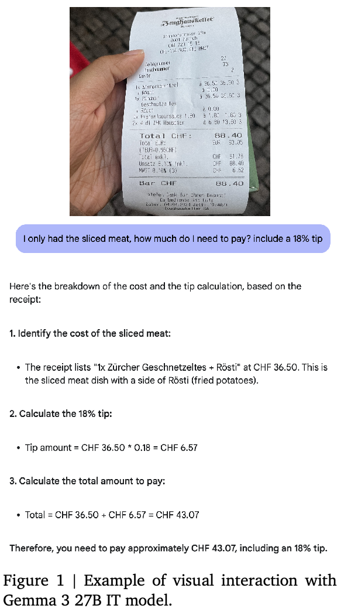
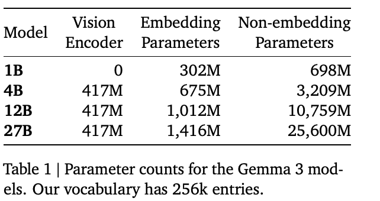
Gemma 3 模型沿用先前版本所采用的仅解码器 Transformer 总体架构（Vaswani et al., 2017），大多数架构元素与前两个 Gemma 版本相似。我们采用 GQA（Ainslie et al., 2023），并使用 RMSNorm（Zhang and Sennrich, 2019）进行后归一化和前归一化。受 Dehghani et al.（2023）、Wortsman et al.（2023）和 Chameleon Team（2024）的启发，我们用 QK-norm 取代 Gemma 2 的 soft-capping。本节重点介绍与先前版本相比的几项关键差异。
局部/全局层按 5:1 交错排列。我们交替使用局部滑动窗口自 attention（Beltagy et al., 2020）和全局自 attention（Luong et al., 2015），每一个全局层对应 5 个局部层，模型的第一层为局部层。
长上下文。Gemma 3 模型支持 128K token 的上下文长度，1B 模型除外，其上下文长度为 32K。我们将全局自 attention 层的 RoPE 基础频率从 10k 提高到 1M，而局部层的频率保持为 10k。我们采用与 Chen et al.（2023）的位置插值类似的流程，扩展全局自 attention 层的跨度。
视觉编码器。我们使用 SigLIP 编码器（Zhai et al., 2023）的一个 400M 变体，这是使用 CLIP 损失（Radford et al., 2021）的变体训练的 Vision Transformer（Dosovitskiy, 2020）。Gemma 视觉编码器以调整为 896 × 896 的正方形图像作为输入，并在视觉助手任务数据上微调。为简化设计，我们的 4B、12B 和 27B 模型共用同一个视觉编码器，并在训练期间将其冻结。
Pan & Scan（P&S）。Gemma 视觉编码器在固定的 896 × 896 分辨率下运行。处理非正方形宽高比和高分辨率图像时，这会产生失真，导致文字无法辨读或小物体消失。我们通过推理时的自适应窗口算法解决这一问题。该算法将图像分割为大小相同、互不重叠且覆盖整幅图像的裁切区域，并将它们调整为 896 × 896 像素后送入编码器。这种窗口处理仅在必要时应用，并限制裁切区域的最大数量。它只是一项推理阶段的优化，可关闭以加快推理。
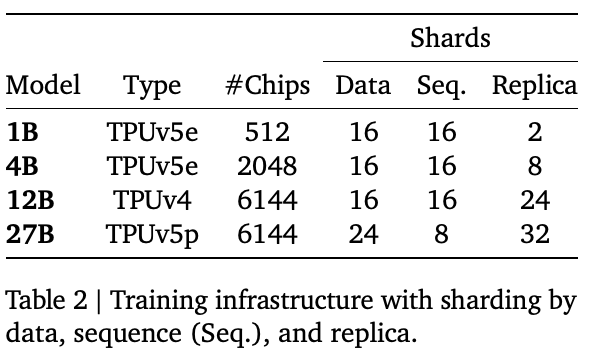
我们采用与 Gemma 2 类似的方案，通过知识蒸馏进行预训练。
训练数据。我们的模型预训练所用的 token 预算略高于 Gemma 2：Gemma 3 27B 使用 14T token，12B 版本使用 12T，4B 使用 4T，1B 使用 2T。Token 数量的增加考虑了预训练期间图像与文本的混合。我们还增加多语言数据的数量，以扩大语言覆盖范围。我们同时加入单语数据和平行数据，并采用受 Chung et al.（2023）启发的策略处理语言表示的不平衡。
Tokenizer。我们使用与 Gemini 2.0 相同的 tokenizer：一个拆分数字、保留空白并采用字节级编码的 SentencePiece tokenizer（Kudo and Richardson, 2018）。生成的词表包含 262k 个条目。这个 tokenizer 对非英语语言更加均衡。
过滤。我们使用过滤技术，降低生成不需要或不安全话语的风险，并移除某些个人信息及其他敏感数据。我们从预训练数据混合中去除评估集污染，并通过尽量减少敏感输出的出现来降低复述风险。我们还采用受 Sachdeva et al.（2024）启发的质量重加权步骤，减少低质量数据的出现。
蒸馏。我们按教师概率加权，为每个 token 采样 256 个 logit。学生通过交叉熵损失学习教师在这些样本内的分布。教师的目标分布将未采样 logit 的概率设为零，并重新归一化。
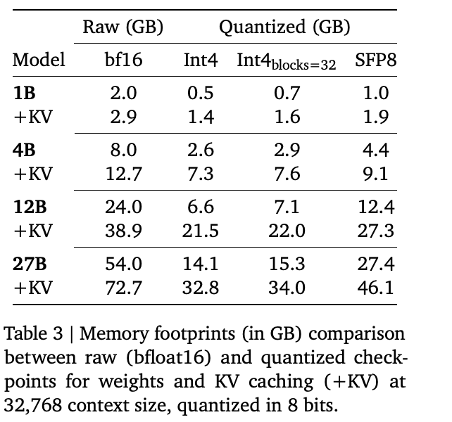
除了原始 checkpoint，我们还提供多种标准格式的模型量化版本。这些版本通过 QAT（Jacob et al., 2018）对每个模型进行少量步骤的微调获得，通常为 5,000 步。我们以未量化 checkpoint 的概率作为目标，并调整数据以匹配预训练和后训练分布。基于最常用的开源量化推理引擎（如 llama.cpp），我们重点采用三种权重表示：逐通道 int4、逐块 int4 和 switched fp8。表 3 报告了各权重表示下，原始和量化模型在 32k token 序列上、使用和不使用 KV-cache 时的内存占用。
我们使用 TPUv4、TPUv5e 和 TPUv5p 训练模型，如表 2 所示。每种模型配置均经过优化，以尽量缩短训练步耗时。对于视觉编码器，我们预先计算每张图像的 embedding，直接用这些 embedding 进行训练，因此不会给语言模型训练带来额外成本。
优化器状态采用 ZeRO-3 的一种实现进行分片（Ren et al., 2021）。对于多 pod 训练，我们在数据中心网络上进行数据副本归约，（接下一页）
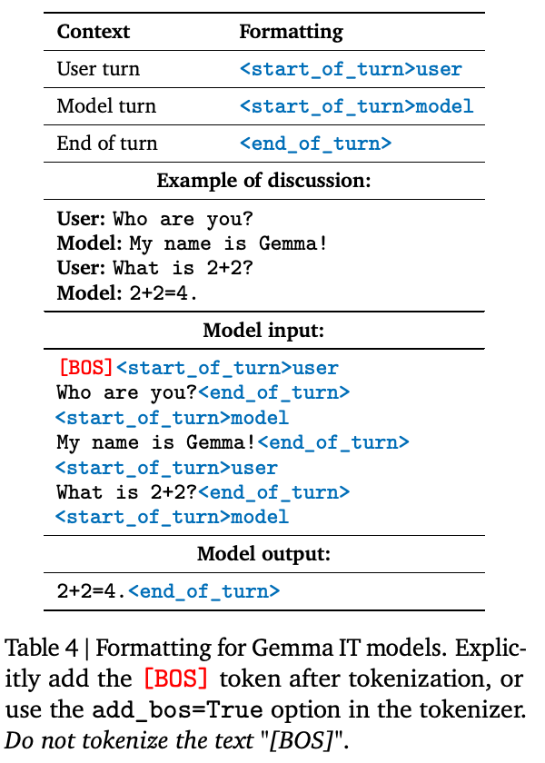
（接上一页）
采用 Barham et al.（2022）的 Pathways 方法。我们使用 Jax（Roberts et al., 2023）和 Pathways（Barham et al., 2022）的“单控制器”编程范式，以及 GSPMD 分区器（Xu et al., 2021）和 MegaScale XLA 编译器（XLA, 2019）。
我们采用比先前方案更好的后训练方法，将预训练模型转变为指令调优模型（见表 6）。
技术。我们的后训练方法依赖于从大型 IT 教师进行知识蒸馏的改进版本（Agarwal et al., 2024; Anil et al., 2018; Hinton et al., 2015），以及一个基于 BOND（Sessa et al., 2024）、WARM（Ramé et al., 2024b）和 WARP（Ramé et al., 2024a）改进版本的强化学习微调阶段。
强化学习目标。我们使用多种奖励函数，提升有用性、数学、编程、推理、指令遵循和多语言能力，同时尽量降低模型的有害性。这包括从使用人类反馈数据训练的权重平均 RM（Ramé et al., 2024b）、代码执行反馈（Gehring et al., 2024），以及解数学题的真实答案奖励（DeepSeek-AI, 2025; Lambert et al., 2024）中学习。
数据过滤。我们精心优化后训练所用的数据，以最大化模型性能。我们过滤掉含有某些个人信息、不安全或有毒模型输出、错误自我身份识别数据以及重复内容的样例。加入鼓励更好的上下文内归因、审慎表述和拒答的数据子集，以尽量减少幻觉，也能提升事实性指标上的表现，而不会降低模型在其他指标上的性能。
[BOS] token。对于 PT 和 IT 模型，文本都以 [BOS] token 开始；由于文本“[BOS]”不会映射到 [BOS] token，因此必须显式添加。例如，Flax 提供 add_bos=True 选项，可在分词时自动添加该 token。表 4 展示了 IT 模型的格式示例。
PT 与 IT 的格式。所有模型共用同一个 tokenizer，其中一些控制 token 专用于 IT 格式。一个关键区别是，PT 模型在生成结束时输出 <eos> token，而 IT 模型在生成结束时输出 <end_of_turn>，表 4 展示了 IT 的情况。因此，微调这两类模型时，也需要添加各自对应的结束 token。
本节通过覆盖多个领域的一系列自动化基准和人工评估，以及 MMLU 等静态基准，评估 IT 模型。
本节报告我们的 IT 27B 模型在 LMSys Chatbot Arena（Chiang et al., 2024）上的表现，评估由人类评分员将其与其他最先进模型进行匿名并排比较。表 5 给出了 Elo 分数。Gemma 3 27B （接下一页）
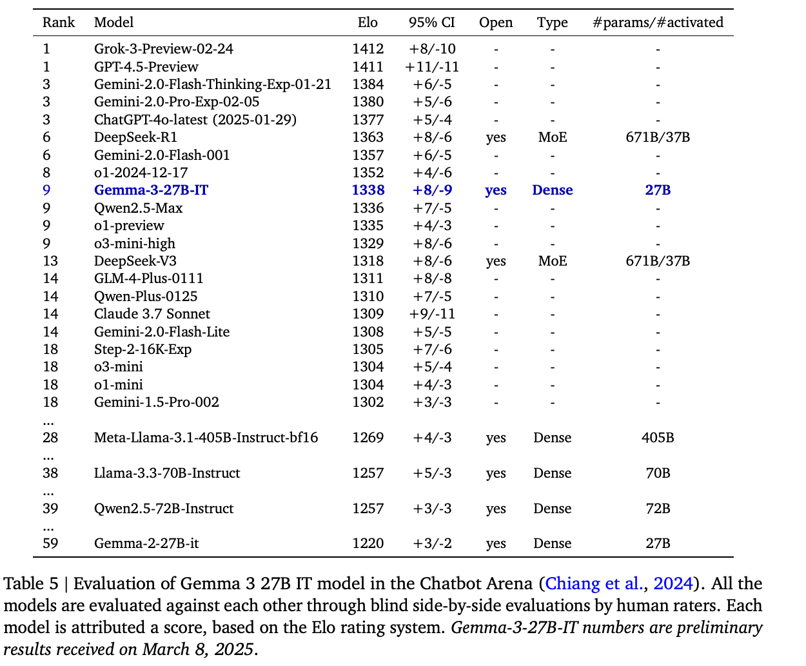
（接上一页）
IT（1338）跻身表现最好的前 10 个模型，分数高于其他非思考型开放模型，如 DeepSeek-V3（1318）、LLaMA 3 405B（1257）和 Qwen2.5-70B（1257），而这些模型的规模要大得多。最后，Gemma 3 的 Elo 明显高于 Gemma 2 的 1220。注意，Elo 分数没有考虑视觉能力，前述模型都没有这种能力。
译注：本段的 LLaMA 3 405B 分数和 Qwen2.5-70B 名称按原文保留；表 5 对应列出的是 Meta-Llama-3.1-405B-Instruct-bf16（1269）及 Qwen2.5-72B-Instruct（1257）。
表 6 展示了最终模型在多种基准上的表现，并与上一代模型以及 Gemini 1.5 比较。我们没有直接比较外部模型，因为它们通常报告各自的评估设置，在我们的设置下运行这些模型并不能保证公平比较。我们建议读者参考第三方静态排行榜，以更公平地比较模型。附录中还给出了模型在其他基准上的补充评估。
本节重点讨论架构变化的影响，以及这个模型新增的一些视觉能力。
我们在预训练期间使用若干标准基准作为探针，确保模型掌握通用能力。图 2 比较了 Gemma 2 和 Gemma 3 预训练模型在这些通用能力上的质量，即科学、（接下一页）
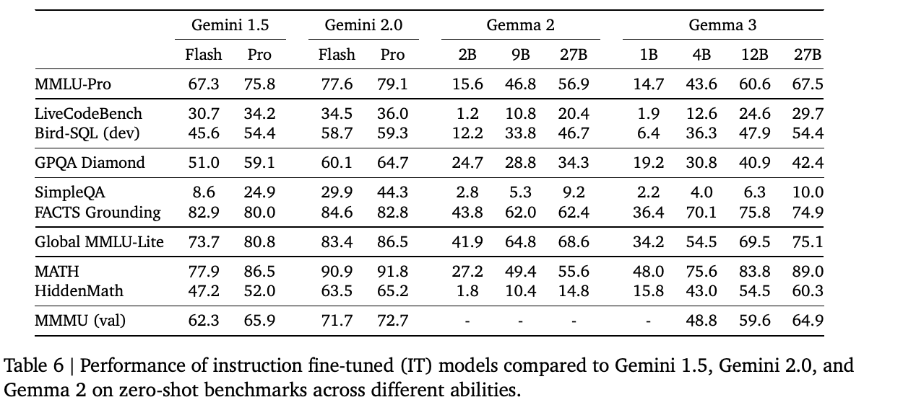
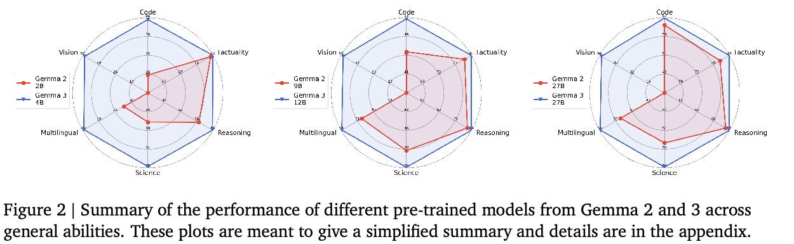
（接上一页）
编程、事实性、多语言、推理和视觉。这些图表所用的不同公开基准上的详细表现汇总于附录。总体而言，我们看到新版本尽管增加了视觉能力，仍在大多数类别上取得提升。本版本尤其重视多语言能力，这直接影响了模型质量。不过，尽管使用了去污染技术，这些探针仍然始终存在被污染的风险（Mirzadeh et al., 2024），因此难以得出更确定的结论。
我们衡量局部和全局自 attention 层的变化对性能及推理期间内存消耗的影响。
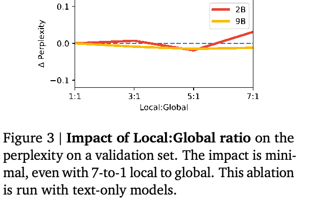
局部:全局比例。图 3 比较了局部和全局 attention 层的不同配比。Gemma 2 模型使用 1:1，Gemma 3 使用 5:1。我们观察到，改变这一比例对 PPL 的影响很小。
滑动窗口大小。图 4 比较了不同全局:局部配比配置下，局部 attention 层的不同滑动窗口大小。（接下一页）
（接上一页）
滑动窗口可以显著缩小，而不影响 PPL。
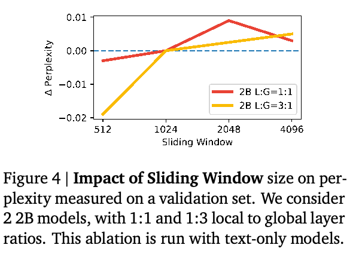
对 KV cache 内存的影响。图 5 展示了在 32k token 上下文的推理过程中，模型与 KV cache 内存占用的平衡。“global only”配置是多数稠密模型使用的标准配置。“1:1, sw=4096”用于 Gemma 2。我们观察到，“global only”配置带来 60% 的内存开销，而使用 1:3 配比和 1024 的滑动窗口（“sw=1024”）时，这一开销降至不足 15%。图 6 将 KV cache 的内存占用表示为上下文长度的函数，比较我们的 2B 架构（L:G=5:1, sw=1024）和一个“global only”的 2B 模型。
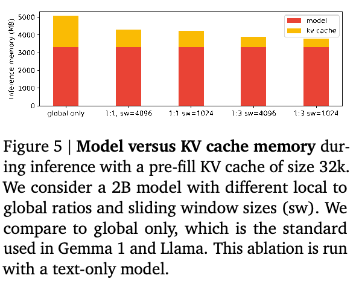
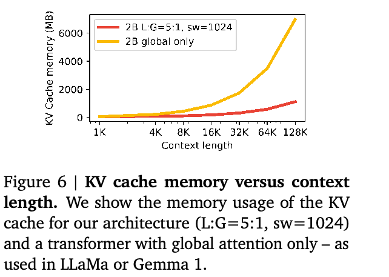
我们没有从头用 128K 序列训练，而是使用 32K 序列预训练模型，然后在预训练末期将 4B、12B 和 27B 模型扩展至 128K token，同时重新缩放 RoPE（Chen et al., 2023）。我们发现缩放因子 8 在实践中效果良好。注意，与 Gemma 2 相比，我们还将全局自 attention 层的 RoPE 基础频率从 10k 提高到 1M，而局部自 attention 层保持为 10k。图 7 展示了不同上下文长度下对 PPL 的影响。模型能泛化到 128K，但继续扩大时会迅速退化。
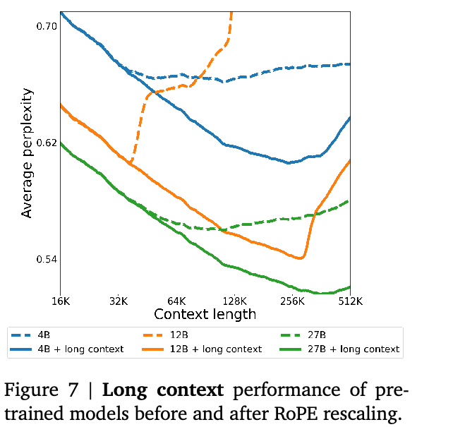
一种常见的发现是，为训练一个小模型，最好从更小的教师进行蒸馏。（接下一页）
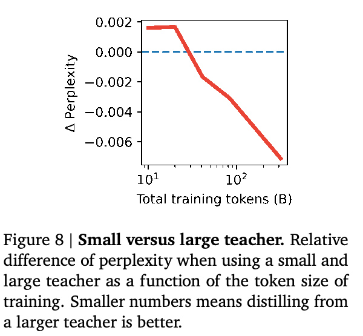
我们怀疑这是因为，这些研究通常所处的设置下，使用较差教师的正则化效果超过了使用较好教师的收益。我们用两个不同规模的教师（一个大、一个小），在不同训练时长下训练学生。图 8 显示，在较短的训练时长下，小教师更好，但训练更长时，趋势会反转。
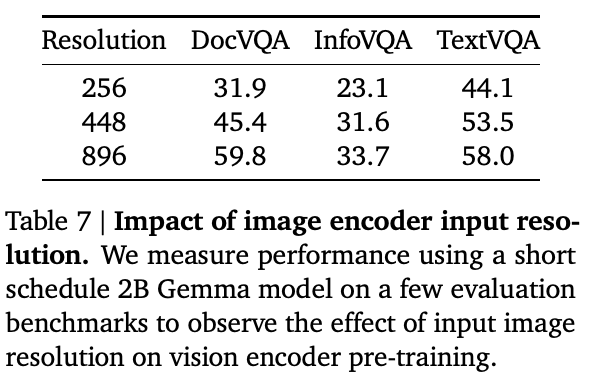
图像分辨率的影响。我们使用一个基于 SigLIP（Zhai et al., 2023）的视觉编码器。视觉编码器被冻结，只训练语言模型。这些多模态数据中的每幅图像，都由相应视觉编码器输出的 256 个图像 token 表示。因此，更高分辨率的编码器使用平均池化，将输出缩减到 256 token。例如，896 分辨率的编码器在输出上使用 4 × 4 平均池化。如表 7 所示，更高分辨率编码器的表现优于较小的编码器。
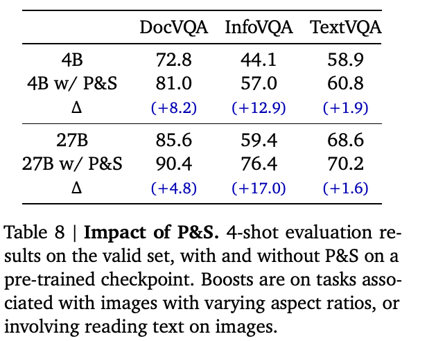
Pan & Scan。P&S 能够以接近图像原始宽高比和分辨率的方式处理图像。表 8 比较了 27B IT 模型使用和不使用 P&S 的情况。正如预期，以接近原始分辨率处理图像的能力，对于需要在图像上读取文字的任务非常有帮助，这对 VLM 尤为重要。
LLM 可能生成训练中使用的某些文本的近似副本（Biderman et al., 2023; Carlini et al., 2021, 2022; Ippolito et al., 2022; Nasr et al., 2023）。先前的若干报告发布了审计，通过测量记忆率量化这种风险（Anil et al., 2023; Chowdhery et al., 2022; Gemini Team, 2023, 2024; Gemma Team, 2024a,b; LLaMa Team, 2024）。这个“记忆率”1定义为：在以下设置下，模型生成内容中与其训练数据匹配的数量，占全部模型生成内容的比例。我们遵循 Gemma Team （接下一页）
1“我们并未在此声明或暗示模型‘包含’其训练数据，即模型中存在这些数据的副本。相反，模型记住了训练数据的属性，因此在某些情况下，遵循规则并使用模型确实包含的训练数据特征信息时，它在统计上能够生成这类训练数据。”
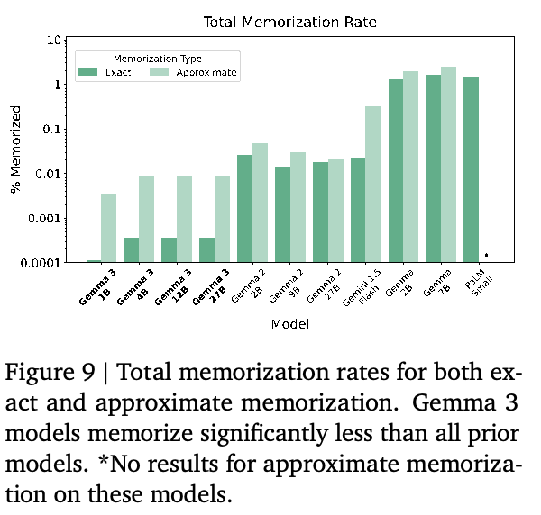
（接上一页）
（2024b）描述的方法进行测量。具体来说，我们对训练数据的大量部分进行子采样，使其均匀分布于不同语料库，再使用长度为 50 的前缀和长度为 50 的后缀，测试这些内容的可发现提取（Nasr et al., 2023）。如果续写中的所有 token 都与源后缀匹配，我们称该文本被“精确记忆”；如果匹配允许最多 10% 的编辑距离，则称其被“近似记忆”。
图 9 比较了 Gemma 与 Gemini 模型的记忆率；模型按时间倒序排列，最新的 Gemma 3 模型位于左侧。我们发现，Gemma 3 模型记忆长篇文本的比例远低于先前模型（注意 y 轴采用对数刻度）。我们观察到 4B、12B 和 27B 模型的记忆率差异很小，1B 的记忆量低于这些较大模型。此外，我们发现更大比例的文本被归类为近似记忆；相对精确记忆，近似记忆的比例平均增加约 24 倍。
我们还研究生成内容可能含有个人信息的比例。为识别潜在个人信息，我们使用 Google Cloud Sensitive Data Protection（SDP）服务2。SDP 使用宽泛的检测规则，识别可能含有个人信息的文本。SDP 的设计目标是高召回率，不考虑信息出现的上下文，因此会产生许多假阳性。所以，我们很可能高估了被归类为记忆的输出中所含潜在个人信息的真实数量。SDP 还提供宽泛的严重程度等级：低、中、高。如果 SDP 将文本归类为任一严重程度的个人信息，我们就将它归类为个人信息。对于所有 Gemma 3 模型，我们在被归类为记忆的输出中都没有观察到个人信息。这表明，被归类为记忆的输出中个人数据的比例很低，低于我们的检测阈值。
2https://cloud.google.com/sensitive-data-protection
责任、安全和安全防护在 Gemma 模型开发中至关重要。为了降低 Gemma 3 用户面临的风险，我们继续整合覆盖开发工作流程的增强内部安全程序，与 Google 近期的 AI 模型（Gemini Team, 2024）保持一致。这些工作重点是训练阶段的安全缓解措施，以及针对新引入的图像到文本能力进行稳健、透明的模型评估。
我们评估 Gemma 收益和风险的方法与 Gemma 1（Gemma Team, 2024a）所述方法一致，同时考虑了支持模态的变化。我们仍然相信，AI 的开放性可以使这些技术的收益惠及整个社会，但必须权衡可能在个人和机构层面造成伤害的恶意使用风险（Weidinger et al., 2021）。自 Gemma 首次发布以来，我们看到这些模型推动了多个有益于社会的应用，例如我们自己的 ShieldGemma 2，这是一个基于 Gemma 3 构建的 4B 图像安全分类器，为图像安全提供现成解决方案，输出危险内容、色情内容和暴力类别的安全标签。
发布 Gemma 3 模型需要特别关注模型能力的变化，（接下一页）
（接上一页）
密切监测现有多模态 LLM 不断演变的风险（Lin et al., 2024），并理解模型在实际环境中的使用方式。尽管我们尚未收到任何 Gemma 恶意使用报告，我们仍承诺调查所有此类报告，与学术和开发者社区合作，并开展自己的监测以发现此类情况。
尽管能力有所进步，但考虑到已有许多规模更大、能力强大的开放模型可用，我们认为本次发布对整体风险格局的影响可以忽略。
Gemma 安全方法的一个关键支柱，是将微调模型与 Google 安全政策对齐，与 Gemini 模型（Gemini Team, 2023）保持一致。这些政策旨在帮助阻止模型生成有害内容，即：
我们对预训练数据进行了大量安全过滤，以降低预训练和微调 checkpoint 生成有害内容的可能性。对于微调模型，我们还同时使用 SFT 和 RLHF，引导模型避开不良行为。
我们还对 IT 模型开展一组基线保障性评估，以了解模型可能造成的潜在伤害。我们倡导开放模型，同时也认识到权重发布不可逆，因此需要严格的风险评估。内部安全程序据此设计；对于先前的 Gemma 模型，我们也评估了与极端风险相关的能力（Phuong et al., 2024; Shevlane et al., 2023）。
在继续开发和分享开放模型时，我们将遵循这一启发式原则：彻底评估能力更强的模型，通常足以为能力较弱的模型提供保障。因此，我们为 Gemma 3 优先采用一组精简评估，将深入的危险能力评估保留用于某个特定模型可能带来更高风险的情况（如下文 CBRN 评估所述）。我们平衡开发速度与有针对性的安全测试，确保评估重点明确、效率高，同时履行《Frontier Safety Framework》中规定的承诺。
基线保障性评估利用大量合成的对抗性用户查询，由人类评分员将回答标注为违反或未违反政策，以衡量模型的安全政策违反率。总体而言，Gemma 3 对这些安全政策的违反率显著偏低。
鉴于模型在 STEM 相关任务上的性能有所提升，我们使用由封闭式、知识型多项选择题构成的内部数据集，评估与生物、放射性和核风险相关的知识。对于化学知识，我们采用 Macknight et al. 开发的针对化学危害的封闭式知识评估方法。评估表明，Gemma 3 模型在这些领域的知识水平较低。
设计安全、可靠且负责任的应用，需要采用系统级方法，努力缓解与每种具体使用场景和环境相关的风险。我们将继续采用与模型潜在风险相称的评估和安全缓解措施，（接下一页）
（接上一页）
只有当我们确信收益显著超过可预见风险时，才会将这些模型分享给社区。
在这项工作中，我们介绍了 Gemma 3，这是 Gemma 文本、图像和代码开放语言模型家族的最新成员。在这个版本中，我们重点增加图像理解和长上下文，同时提升多语言及 STEM 相关能力。模型规模和架构旨在兼容标准硬件，大多数架构改进都是为适应这种硬件而量身设计，同时保持性能。
中文标题：RealWorldQA
Realworldqa. https://x.ai/news/grok-1.5v.
中文标题：TallyQA：回答复杂计数问题
M. Acharya, K. Kafle, and C. Kanan. Tallyqa: Answering complex counting questions. In AAAI, 2018.
中文标题：语言模型的在线策略蒸馏：从自行生成的错误中学习
R. Agarwal, N. Vieillard, Y. Zhou, P. Stanczyk, S. R. Garea, M. Geist, and O. Bachem. On-policy distillation of language models: Learning from self-generated mistakes. In ICLR, 2024.
中文标题：GQA：从多头 checkpoint 训练广义多查询 Transformer 模型
J. Ainslie, J. Lee-Thorp, M. de Jong, Y. Zemlyanskiy, F. Lebrón, and S. Sanghai. Gqa: Training generalized multi-query transformer models from multi-head checkpoints. arXiv preprint arXiv:2305.13245, 2023.
中文标题：通过在线蒸馏进行大规模分布式神经网络训练
R. Anil, G. Pereyra, A. Passos, R. Ormandi, G. E. Dahl, and G. E. Hinton. Large scale distributed neural network training through online distillation. arXiv preprint arXiv:1804.03235, 2018.
中文标题：PaLM 2 技术报告
R. Anil, A. M. Dai, O. Firat, M. Johnson, D. Lepikhin, A. Passos, S. Shakeri, E. Taropa, P. Bailey, Z. Chen, et al. Palm 2 technical report. arXiv preprint arXiv:2305.10403, 2023.
中文标题：论单语表示的跨语言可迁移性
M. Artetxe, S. Ruder, and D. Yogatama. On the cross-lingual transferability of monolingual representations. In ACL, 2020.
中文标题：XOR QA：跨语言开放检索问答
A. Asai, J. Kasai, J. H. Clark, K. Lee, E. Choi, and H. Hajishirzi. Xor qa: Cross-lingual open-retrieval question answering. arXiv preprint arXiv:2010.11856, 2020.
中文标题：使用 LLM 进行程序合成
J. Austin, A. Odena, M. I. Nye, M. Bosma, H. Michalewski, D. Dohan, E. Jiang, C. J. Cai, M. Terry, Q. V. Le, and C. Sutton. Program synthesis with large language models. CoRR, abs/2108.07732, 2021.
中文标题：Pathways：面向机器学习的异步分布式数据流
P. Barham, A. Chowdhery, J. Dean, S. Ghemawat, S. Hand, D. Hurt, M. Isard, H. Lim, R. Pang, S. Roy, B. Saeta, P. Schuh, R. Sepassi, L. E. Shafey, C. A. Thekkath, and Y. Wu. Pathways: Asynchronous distributed dataflow for ml, 2022.
中文标题：Longformer：长文档 Transformer
I. Beltagy, M. E. Peters, and A. Cohan. Longformer: The long-document transformer. arXiv preprint arXiv:2004.05150, 2020.
中文标题：LLM 中涌现且可预测的记忆
S. Biderman, U. Prashanth, L. Sutawika, H. Schoelkopf, Q. Anthony, S. Purohit, and E. Raff. Emergent and predictable memorization in large language models. NeurIPS, 36: 28072–28090, 2023.
中文标题：PIQA：以自然语言推理物理常识
Y. Bisk, R. Zellers, R. L. Bras, J. Gao, and Y. Choi. PIQA: reasoning about physical commonsense in natural language. CoRR, abs/1911.11641, 2019.
中文标题：从 LLM 中提取训练数据
N. Carlini, F. Tramer, E. Wallace, M. Jagielski, A. Herbert-Voss, K. Lee, A. Roberts, T. Brown, D. Song, U. Erlingsson, et al. Extracting training data from large language models. In USENIX, 2021.
中文标题：量化神经语言模型的记忆
N. Carlini, D. Ippolito, M. Jagielski, K. Lee, F. Tramer, and C. Zhang. Quantifying memorization across neural language models. arXiv preprint arXiv:2202.07646, 2022.
中文标题：Chameleon：混合模态早期融合基础模型
Chameleon Team. Chameleon: Mixed-modal early-fusion foundation models. arXiv preprint arXiv:2405.09818, 2024.
中文标题：（作者名单接下一页；标题见下一页）
M. Chen, J. Tworek, H. Jun, Q. Yuan, H. P. de Oliveira Pinto, J. Kaplan, H. Edwards, Y. Burda, N. Joseph, G. Brockman, A. Ray, R. Puri, G. Krueger, M. Petrov, H. Khlaaf,
中文标题：评估使用代码训练的 LLM（作者名单接上一页）
G. Sastry, P. Mishkin, B. Chan, S. Gray, N. Ryder, M. Pavlov, A. Power, L. Kaiser, M. Bavarian, C. Winter, P. Tillet, F. P. Such, D. Cummings, M. Plappert, F. Chantzis, E. Barnes, A. Herbert-Voss, W. H. Guss, A. Nichol, A. Paino, N. Tezak, J. Tang, I. Babuschkin, S. Balaji, S. Jain, W. Saunders, C. Hesse, A. N. Carr, J. Leike, J. Achiam, V. Misra, E. Morikawa, A. Radford, M. Knight, M. Brundage, M. Murati, K. Mayer, P. Welinder, B. McGrew, D. Amodei, S. McCandlish, I. Sutskever, and W. Zaremba. Evaluating large language models trained on code. CoRR, abs/2107.03374, 2021.
中文标题：通过位置插值扩展 LLM 的上下文窗口
S. Chen, S. Wong, L. Chen, and Y. Tian. Extending context window of large language models via positional interpolation. arXiv preprint arXiv:2306.15595, 2023.
中文标题：Microsoft COCO Captions：数据收集与评估服务器
X. Chen, H. Fang, T.-Y. Lin, R. Vedantam, S. Gupta, P. Dollár, and C. L. Zitnick. Microsoft coco captions: Data collection and evaluation server. ArXiv, abs/1504.00325, 2015.
中文标题：Chatbot Arena：通过人类偏好评估 LLM 的开放平台
W.-L. Chiang, L. Zheng, Y. Sheng, A. N. Angelopoulos, T. Li, D. Li, H. Zhang, B. Zhu, M. Jordan, J. E. Gonzalez, and I. Stoica. Chatbot arena: An open platform for evaluating llms by human preference, 2024.
中文标题：论智能的度量
F. Chollet. On the measure of intelligence. arXiv preprint arXiv:1911.01547, 2019.
中文标题：PaLM：通过 Pathways 扩展语言建模
A. Chowdhery, S. Narang, J. Devlin, M. Bosma, G. Mishra, A. Roberts, P. Barham, H. W. Chung, C. Sutton, S. Gehrmann, P. Schuh, K. Shi, S. Tsvyashchenko, J. Maynez, A. Rao, P. Barnes, Y. Tay, N. Shazeer, V. Prabhakaran, E. Reif, N. Du, B. Hutchinson, R. Pope, J. Bradbury, J. Austin, M. Isard, G. Gur-Ari, P. Yin, T. Duke, A. Levskaya, S. Ghemawat, S. Dev, H. Michalewski, X. Garcia, V. Misra, K. Robinson, L. Fedus, D. Zhou, D. Ippolito, D. Luan, H. Lim, B. Zoph, A. Spiridonov, R. Sepassi, D. Dohan, S. Agrawal, M. Omernick, A. M. Dai, T. S. Pillai, M. Pellat, A. Lewkowycz, E. Moreira, R. Child, O. Polozov, K. Lee, Z. Zhou, X. Wang, B. Saeta, M. Diaz, O. Firat, M. Catasta, J. Wei, K. Meier-Hellstern, D. Eck, J. Dean, S. Petrov, and N. Fiedel. Palm: Scaling language modeling with pathways, 2022.
中文标题：UniMax：面向大规模多语言预训练的更公平、更有效的语言采样
H. W. Chung, N. Constant, X. Garcia, A. Roberts, Y. Tay, S. Narang, and O. Firat. Unimax: Fairer and more effective language sampling for large-scale multilingual pretraining, 2023.
中文标题：BoolQ：探索自然是/否问题出人意料的难度
C. Clark, K. Lee, M. Chang, T. Kwiatkowski, M. Collins, and K. Toutanova. Boolq: Exploring the surprising difficulty of natural yes/no questions. CoRR, abs/1905.10044, 2019.
中文标题：训练验证器以解决数学应用题
K. Cobbe, V. Kosaraju, M. Bavarian, M. Chen, H. Jun, L. Kaiser, M. Plappert, J. Tworek, J. Hilton, R. Nakano, C. Hesse, and J. Schulman. Training verifiers to solve math word problems. CoRR, abs/2110.14168, 2021.
中文标题：DeepSeek-R1：激励推理学习
DeepSeek-AI. Deepseek-r1: Incentivizing reasoningt learning, 2025.
中文标题：将 Vision Transformer 扩展至 220 亿参数
M. Dehghani, J. Djolonga, B. Mustafa, P. Padlewski, J. Heek, J. Gilmer, A. P. Steiner, M. Caron, R. Geirhos, I. Alabdulmohsin, et al. Scaling vision transformers to 22 billion parameters. In ICML, 2023.
中文标题：WMT24++：将 WMT24 的语言覆盖扩展至 55 种语言和方言
D. Deutsch, E. Briakou, I. Caswell, M. Finkelstein, R. Galor, J. Juraska, G. Kovacs, A. Lui, R. Rei, J. Riesa, S. Rijhwani, P. Riley, E. Salesky, F. Trabelsi, S. Winkler, B. Zhang, and M. Freitag. Wmt24++: Expanding the language coverage of wmt24 to 55 languages & dialects, 2025.
中文标题：一幅图像相当于 16 × 16 个词：用于大规模图像识别的 Transformer
A. Dosovitskiy. An image is worth 16x16 words: Transformers for image recognition at scale. arXiv preprint arXiv:2010.11929, 2020.
中文标题：DROP：需要对段落进行离散推理的阅读理解基准
D. Dua, Y. Wang, P. Dasigi, G. Stanovsky, S. Singh, and M. Gardner. DROP: A reading comprehension benchmark requiring discrete reasoning over paragraphs. In ACL, 2019.
中文标题：Test of Time：评估 LLM 时间推理的基准
B. Fatemi, M. Kazemi, A. Tsitsulin, K. Malkan, J. Yim, J. Palowitch, S. Seo, J. Halcrow, and B. Perozzi. Test of time: A benchmark for evaluating llms on temporal reasoning. arXiv preprint arXiv:2406.09170, 2024.
中文标题：BLINK：多模态 LLM 能看见，却不能感知
X. Fu, Y. Hu, B. Li, Y. Feng, H. Wang, X. Lin, D. Roth, N. A. Smith, W.-C. Ma, and R. Krishna. Blink: Multimodal large language models can see but not perceive. ArXiv, abs/2404.12390, 2024.
中文标题：RLEF：通过强化学习使代码 LLM 基于执行反馈学习
J. Gehring, K. Zheng, J. Copet, V. Mella, T. Cohen, and G. Synnaeve. Rlef: Grounding code llms in execution feedback with reinforcement learning. arXiv preprint arXiv:2410.02089, 2024.
中文标题：Gemini：高能力多模态模型家族
Gemini Team. Gemini: A family of highly capable multimodal models, 2023.
中文标题：Gemini 1.5：解锁跨越数百万 token 上下文的多模态理解
Gemini Team. Gemini 1.5: Unlocking multimodal understanding across millions of tokens of context, 2024.
中文标题：Gemma：基于 Gemini 研究和技术的开放模型
Gemma Team. Gemma: Open models based on gemini research and technology, 2024a.
中文标题：Gemma 2：以实用规模改进开放语言模型
Gemma Team. Gemma 2: Improving open language models at a practical size. arXiv preprint arXiv:2408.00118, 2024b.
中文标题：ECLeKTic：用于评估跨语言知识迁移的新挑战集
O. Goldman, U. Shaham, D. Malkin, S. Eiger, A. Hassidim, Y. Matias, J. Maynez, A. M. Gilady, J. Riesa, S. Rijhwani, L. Rimell, I. Szpektor, R. Tsarfaty, and M. Eyal. Eclektic: a novel challenge set for evaluation of cross-lingual knowledge transfer, 2025.
中文标题：FLORES-101：面向低资源与多语言机器翻译的评估基准
N. Goyal, C. Gao, V. Chaudhary, P.-J. Chen, G. Wenzek, D. Ju, S. Krishnan, M. Ranzato, F. Guzmán, and A. Fan. The flores-101 evaluation benchmark for low-resource and multilingual machine translation. ACL, 2022.
中文标题：让 VQA 中的 V 发挥作用：提升图像理解在视觉问答中的作用
Y. Goyal, T. Khot, D. Summers-Stay, D. Batra, and D. Parikh. Making the V in VQA matter: Elevating the role of image understanding in Visual Question Answering. In CVPR, 2017.
中文标题：衡量大规模多任务语言理解
D. Hendrycks, C. Burns, S. Basart, A. Zou, M. Mazeika, D. Song, and J. Steinhardt. Measuring massive multitask language understanding. CoRR, abs/2009.03300, 2020.
中文标题：使用 MATH 数据集衡量数学问题求解能力
D. Hendrycks, C. Burns, S. Kadavath, A. Arora, S. Basart, E. Tang, D. Song, and J. Steinhardt. Measuring mathematical problem solving with the math dataset. NeurIPS, 2021.
中文标题：仿生人会笑话电子羊吗？来自《纽约客》配文比赛的幽默“理解”基准
J. Hessel, A. Marasović, J. D. Hwang, L. Lee, J. Da, R. Zellers, R. Mankoff, and Y. Choi. Do androids laugh at electric sheep? humor" understanding" benchmarks from the new yorker caption contest. arXiv preprint arXiv:2209.06293, 2022.
中文标题：蒸馏神经网络中的知识
G. Hinton, O. Vinyals, and J. Dean. Distilling the knowledge in a neural network. arXiv preprint arXiv:1503.02531, 2015.
中文标题：RULER：你的长上下文语言模型真正的上下文长度是多少？
C.-P. Hsieh, S. Sun, S. Kriman, S. Acharya, D. Rekesh, F. Jia, Y. Zhang, and B. Ginsburg. Ruler: What’s the real context size of your long-context language models? arXiv preprint arXiv:2404.06654, 2024.
中文标题：阻止语言模型逐字记忆会造成隐私安全的错觉
D. Ippolito, F. Tramèr, M. Nasr, C. Zhang, M. Jagielski, K. Lee, C. A. Choquette-Choo, and N. Carlini. Preventing verbatim memorization in language models gives a false sense of privacy. arXiv preprint arXiv:2210.17546, 2022.
中文标题：用于高效纯整数算术推理的神经网络量化与训练
B. Jacob, S. Kligys, B. Chen, M. Zhu, M. Tang, A. Howard, H. Adam, and D. Kalenichenko. Quantization and training of neural networks for efficient integer-arithmetic-only inference. In CVPR, 2018.
中文标题：TriviaQA：用于阅读理解的大规模远程监督挑战数据集
M. Joshi, E. Choi, D. S. Weld, and L. Zettlemoyer. Triviaqa: A large scale distantly supervised challenge dataset for reading comprehension. CoRR, abs/1705.03551, 2017.
中文标题：GeomVerse：系统评估大型模型的几何推理能力
M. Kazemi, H. Alvari, A. Anand, J. Wu, X. Chen, and R. Soricut. Geomverse: A systematic evaluation of large models for geometric reasoning. arXiv preprint arXiv:2312.12241, 2023.
中文标题：ReMI：用于多图像推理的数据集
M. Kazemi, N. Dikkala, A. Anand, P. Dević, I. Dasgupta, F. Liu, B. Fatemi, P. Awasthi, D. Guo, S. Gollapudi, and A. Qureshi. Remi: A dataset for reasoning with multiple images. ArXiv, abs/2406.09175, 2024a.
中文标题：BoardGameQA：用于含矛盾信息的自然语言推理的数据集
M. Kazemi, Q. Yuan, D. Bhatia, N. Kim, X. Xu, V. Imbrasaite, and D. Ramachandran. Boardgameqa: A dataset for natural language reasoning with contradictory information. NeurIPS, 36, 2024b.
中文标题：BIG-Bench Extra Hard
M. Kazemi, B. Fatemi, H. Bansal, J. Palowitch, C. Anastasiou, S. V. Mehta, L. K. Jain, V. Aglietti, D. Jindal, P. Chen, et al. Big-bench extra hard. arXiv preprint arXiv:2502.19187, 2025.
中文标题：一张示意图相当于十几幅图像
A. Kembhavi, M. Salvato, E. Kolve, M. Seo, H. Hajishirzi, and A. Farhadi. A diagram is worth a dozen images. ArXiv, abs/1603.07396, 2016.
中文标题：因果推理与 LLM：开辟因果关系的新前沿
E. Kıcıman, R. Ness, A. Sharma, and C. Tan. Causal reasoning and large language models: Opening a new frontier for causality. arXiv preprint arXiv:2305.00050, 2023.
中文标题：SentencePiece：用于神经文本处理的简单、语言无关的子词 tokenizer 与反 tokenizer
T. Kudo and J. Richardson. SentencePiece: A simple and language independent subword tokenizer and detokenizer for neural text processing. 2018.
中文标题：Natural Questions：用于问答研究的基准
T. Kwiatkowski, J. Palomaki, O. Redfield, M. Collins, A. Parikh, C. Alberti, D. Epstein, I. Polosukhin, J. Devlin, K. Lee, K. Toutanova, L. Jones, M. Kelcey, M.-W. Chang, A. M. Dai, J. Uszkoreit, Q. Le, and S. Petrov. Natural questions: A benchmark for question answering research. ACL, 2019.
中文标题：Tülu 3：推进开放语言模型后训练的前沿
N. Lambert, J. Morrison, V. Pyatkin, S. Huang, H. Ivison, F. Brahman, L. J. V. Miranda, A. Liu, N. Dziri, S. Lyu, et al. T\" ulu 3: Pushing frontiers in open language model post-training. arXiv preprint arXiv:2411.15124, 2024.
中文标题：Malla：揭示现实世界中集成 LLM 的恶意服务
Z. Lin, J. Cui, X. Liao, and X. Wang. Malla: Demystifying real-world large language model integrated malicious services, 2024.
中文标题：视觉指令调优
H. Liu, C. Li, Q. Wu, and Y. J. Lee. Visual instruction tuning. NeurIPS, 36, 2024.
中文标题：Llama 3 模型家族
LLaMa Team. The llama 3 herd of models. arXiv preprint arXiv:2407.21783, 2024.
中文标题：基于 attention 的神经机器翻译的有效方法
M. Luong, H. Pham, and C. D. Manning. Effective approaches to attention-based neural machine translation. 2015.
中文标题：私人通信
Macknight, Aung, and Gomes. Personal Communication.
中文标题：OK-VQA：需要外部知识的视觉问答基准
K. Marino, M. Rastegari, A. Farhadi, and R. Mottaghi. Ok-vqa: A visual question answering benchmark requiring external knowledge. In CVPR, 2019.
中文标题：ChartQA：需要视觉与逻辑推理的图表问答基准
A. Masry, X. L. Do, J. Q. Tan, S. Joty, and E. Hoque. ChartQA: A benchmark for question answering about charts with visual and logical reasoning. ACL, 2022.
中文标题：DocVQA：用于文档图像视觉问答的数据集
M. Mathew, D. Karatzas, R. Manmatha, and C. V. Jawahar. Docvqa: A dataset for vqa on document images. WACV, 2020.
中文标题：InfographicVQA
M. Mathew, V. Bagal, R. Tito, D. Karatzas, E. Valveny, and C. Jawahar. Infographicvqa. In WACV, 2022.
中文标题：GSM-Symbolic：理解 LLM 数学推理的局限
I. Mirzadeh, K. Alizadeh, H. Shahrokhi, O. Tuzel, S. Bengio, and M. Farajtabar. Gsm-symbolic: Understanding the limitations of mathematical reasoning in large language models. arXiv preprint arXiv:2410.05229, 2024.
中文标题：从（生产环境）语言模型中可扩展地提取训练数据
M. Nasr, N. Carlini, J. Hayase, M. Jagielski, A. F. Cooper, D. Ippolito, C. A. Choquette-Choo, E. Wallace, F. Tramèr, and K. Lee. Scalable extraction of training data from (production) language models. arXiv preprint arXiv:2311.17035, 2023.
中文标题：MOCA：衡量人类与语言模型在因果及道德判断任务上的对齐
A. Nie, Y. Zhang, A. S. Amdekar, C. Piech, T. B. Hashimoto, and T. Gerstenberg. Moca: Measuring human-language model alignment on causal and moral judgment tasks. NeurIPS, 36, 2024.
中文标题：教 CLIP 数到十
R. Paiss, A. Ephrat, O. Tov, S. Zada, I. Mosseri, M. Irani, and T. Dekel. Teaching clip to count to ten. ICCV, 2023.
中文标题：评估前沿模型的危险能力
M. Phuong, M. Aitchison, E. Catt, S. Cogan, A. Kaskasoli, V. Krakovna, D. Lindner, M. Rahtz, Y. Assael, S. Hodkinson, H. Howard, T. Lieberum, R. Kumar, M. A. Raad, A. Webson, L. Ho, S. Lin, S. Farquhar, M. Hutter, G. Deletang, A. Ruoss, S. El-Sayed, S. Brown, A. Dragan, R. Shah, A. Dafoe, and T. Shevlane. Evaluating frontier models for dangerous capabilities, 2024.
中文标题：从自然语言监督中学习可迁移的视觉模型
A. Radford, J. W. Kim, C. Hallacy, A. Ramesh, G. Goh, S. Agarwal, G. Sastry, A. Askell, P. Mishkin, J. Clark, et al. Learning transferable visual models from natural language supervision. In ICML, pages 8748–8763. PMLR, 2021.
中文标题：WARP：论权重平均奖励策略的益处
A. Ramé, J. Ferret, N. Vieillard, R. Dadashi, L. Hussenot, P.-L. Cedoz, P. G. Sessa, S. Girgin, A. Douillard, and O. Bachem. WARP: On the benefits of weight averaged rewarded policies, 2024a.
中文标题：WARM：论权重平均 RM 的益处
A. Ramé, N. Vieillard, L. Hussenot, R. Dadashi, G. Cideron, O. Bachem, and J. Ferret. WARM: On the benefits of weight averaged reward models. In ICML, 2024b.
中文标题：GPQA：一个研究生级别、无法靠 Google 搜索解答的问答基准
D. Rein, B. L. Hou, A. C. Stickland, J. Petty, R. Y. Pang, J. Dirani, J. Michael, and S. R. Bowman. Gpqa: A graduate-level google-proof q&a benchmark. ArXiv, abs/2311.12022, 2023.
中文标题：ZeRO-Offload：让十亿参数规模模型训练大众化
J. Ren, S. Rajbhandari, R. Y. Aminabadi, O. Ruwase, S. Yang, M. Zhang, D. Li, and Y. He. Zero-offload: Democratizing billion-scale model training. In USENIX, 2021.
中文标题：使用 T5X 和 SeqIO 扩展模型与数据规模
A. Roberts, H. W. Chung, G. Mishra, A. Levskaya, J. Bradbury, D. Andor, S. Narang, B. Lester, C. Gaffney, A. Mohiuddin, et al. Scaling up models and data with t5x and seqio. JMLR, 2023.
中文标题：如何训练数据高效的 LLM
N. Sachdeva, B. Coleman, W.-C. Kang, J. Ni, L. Hong, E. H. Chi, J. Caverlee, J. McAuley, and D. Z. Cheng. How to train data-efficient llms. arXiv preprint arXiv:2402.09668, 2024.
中文标题：WinoGrande：大规模对抗性 Winograd Schema 挑战
K. Sakaguchi, R. L. Bras, C. Bhagavatula, and Y. Choi. WINOGRANDE: an adversarial winograd schema challenge at scale. CoRR, abs/1907.10641, 2019.
中文标题：Linguini：用于语言无关语言学推理的基准
E. Sánchez, B. Alastruey, C. Ropers, P. Stenetorp, M. Artetxe, and M. R. Costa-jussà. Linguini: A benchmark for language-agnostic linguistic reasoning. arXiv preprint arXiv:2409.12126, 2024.
中文标题：SocialIQA：关于社会互动的常识推理
M. Sap, H. Rashkin, D. Chen, R. L. Bras, and Y. Choi. Socialiqa: Commonsense reasoning about social interactions. CoRR, abs/1904.09728, 2019.
中文标题：BOND：通过 best-of-n 蒸馏对齐 LLM
P. G. Sessa, R. Dadashi, L. Hussenot, J. Ferret, N. Vieillard, A. Ramé, B. Shariari, S. Perrin, A. Friesen, G. Cideron, S. Girgin, P. Stanczyk, A. Michi, D. Sinopalnikov, S. Ramos, A. Héliou, A. Severyn, M. Hoffman, N. Momchev, and O. Bachem. Bond: Aligning llms with best-of-n distillation, 2024.
中文标题：因果语言建模能够激发逻辑谜题上的搜索与推理能力
K. Shah, N. Dikkala, X. Wang, and R. Panigrahy. Causal language modeling can elicit search and reasoning capabilities on logic puzzles. arXiv preprint arXiv:2409.10502, 2024.
中文标题：（作者名单接右栏；标题见下条）
T. Shevlane, S. Farquhar, B. Garfinkel, M. Phuong, J. Whittlestone, J. Leung, D. Kokotajlo, N. Marchal, M. Anderljung, N. Kolt, L. Ho, D. Siddarth, S. Avin, W. Hawkins, B. Kim, I. Gabriel,
中文标题：针对极端风险的模型评估（作者名单接左栏）
V. Bolina, J. Clark, Y. Bengio, P. Christiano, and A. Dafoe. Model evaluation for extreme risks, 2023.
中文标题：语言模型是多语言 CoT 推理器
F. Shi, M. Suzgun, M. Freitag, X. Wang, S. Srivats, S. Vosoughi, H. W. Chung, Y. Tay, S. Ruder, D. Zhou, D. Das, and J. Wei. Language models are multilingual chain-of-thought reasoners. In ICLR, 2023.
中文标题：迈向能够阅读的 VQA 模型
A. Singh, V. Natarjan, M. Shah, Y. Jiang, X. Chen, D. Parikh, and M. Rohrbach. Towards vqa models that can read. In CVPR, 2019.
中文标题：IndicGenBench：评估 LLM 在印度语言上生成能力的多语言基准
H. Singh, N. Gupta, S. Bharadwaj, D. Tewari, and P. Talukdar. Indicgenbench: a multilingual benchmark to evaluate generation capabilities of llms on indic languages. arXiv preprint arXiv:2404.16816, 2024a.
中文标题：Global MMLU：理解并解决多语言评估中的文化与语言偏差
S. Singh, A. Romanou, C. Fourrier, D. I. Adelani, J. G. Ngui, D. Vila-Suero, P. Limkonchotiwat, K. Marchisio, W. Q. Leong, Y. Susanto, R. Ng, S. Longpre, W.-Y. Ko, M. Smith, A. Bosselut, A. Oh, A. F. T. Martins, L. Choshen, D. Ippolito, E. Ferrante, M. Fadaee, B. Ermis, and S. Hooker. Global mmlu: Understanding and addressing cultural and linguistic biases in multilingual evaluation, 2024b.
中文标题：PaliGemma 2：用于迁移的多用途 VLM 家族
A. Steiner, A. S. Pinto, M. Tschannen, D. Keysers, X. Wang, Y. Bitton, A. Gritsenko, M. Minderer, A. Sherbondy, S. Long, S. Qin, R. Ingle, E. Bugliarello, S. Kazemzadeh, T. Mesnard, I. Alabdulmohsin, L. Beyer, and X. Zhai. PaliGemma 2: A Family of Versatile VLMs for Transfer. arXiv preprint arXiv:2412.03555, 2024.
中文标题：具有挑战性的 BIG-Bench 任务，以及 CoT 能否解决它们
M. Suzgun, N. Scales, N. Schärli, S. Gehrmann, Y. Tay, H. W. Chung, A. Chowdhery, Q. V. Le, E. H. Chi, D. Zhou, and J. Wei. Challenging big-bench tasks and whether chain-of-thought can solve them, 2022.
中文标题：LLM 无法发现推理错误，却能纠正它们！
G. Tyen, H. Mansoor, P. Chen, T. Mak, and V. Cărbune. Llms cannot find reasoning errors, but can correct them! arXiv preprint arXiv:2311.08516, 2023.
中文标题：attention 就是你所需要的全部
A. Vaswani, N. Shazeer, N. Parmar, J. Uszkoreit, L. Jones, A. N. Gomez, L. Kaiser, and I. Polosukhin. Attention is all you need. 2017.
中文标题：Michelangelo：通过潜在结构查询实现超越 Needle-in-a-Haystack 的长上下文评估
K. Vodrahalli, S. Ontanon, N. Tripuraneni, K. Xu, S. Jain, R. Shivanna, J. Hui, N. Dikkala, M. Kazemi, B. Fatemi, et al. Michelangelo: Long context evaluations beyond haystacks via latent structure queries. arXiv preprint arXiv:2409.12640, 2024.
中文标题：MMLU-Pro：更加稳健且具有挑战性的多任务语言理解基准
Y. Wang, X. Ma, G. Zhang, Y. Ni, A. Chandra, S. Guo, W. Ren, A. Arulraj, X. He, Z. Jiang, et al. Mmlu-pro: A more robust and challenging multi-task language understanding benchmark. In NeurIPS, 2024.
中文标题：语言模型造成伤害的伦理和社会风险
L. Weidinger, J. Mellor, M. Rauh, C. Griffin, J. Uesato, P.-S. Huang, M. Cheng, M. Glaese, B. Balle, A. Kasirzadeh, Z. Kenton, S. Brown, W. Hawkins, T. Stepleton, C. Biles, A. Birhane, J. Haas, L. Rimell, L. A. Hendricks, W. Isaac, S. Legassick, G. Irving, and I. Gabriel. Ethical and social risks of harm from language models, 2021.
中文标题：LiveBench：一个具有挑战性、无污染的 LLM 基准
C. White, S. Dooley, M. Roberts, A. Pal, B. Feuer, S. Jain, R. Shwartz-Ziv, N. Jain, K. Saifullah, S. Naidu, et al. Livebench: A challenging, contamination-free llm benchmark. arXiv preprint arXiv:2406.19314, 2024.
中文标题：用于大规模 Transformer 训练不稳定性的小规模代理实验
M. Wortsman, P. J. Liu, L. Xiao, K. Everett, A. Alemi, B. Adlam, J. D. Co-Reyes, I. Gur, A. Kumar, R. Novak, et al. Small-scale proxies for large-scale transformer training instabilities. arXiv preprint arXiv:2309.14322, 2023.
中文标题：XLA：TensorFlow 的优化编译器
XLA. Xla: Optimizing compiler for tensorflow, 2019. URL https://www.tensorflow.org/xla.
中文标题：GSPMD：机器学习计算图的通用、可扩展并行化
Y. Xu, H. Lee, D. Chen, B. A. Hechtman, Y. Huang, R. Joshi, M. Krikun, D. Lepikhin, A. Ly, M. Maggioni, R. Pang, N. Shazeer, S. Wang, T. Wang, Y. Wu, and Z. Chen. GSPMD: general and scalable parallelization for ML computation graphs. 2021.
中文标题：评估 LLM 的空间理解能力
Y. Yamada, Y. Bao, A. K. Lampinen, J. Kasai, and I. Yildirim. Evaluating spatial understanding of large language models. arXiv preprint arXiv:2310.14540, 2023.
中文标题：SpatialSense：通过对抗式众包构建的（接右栏）
K. Yang, O. Russakovsky, and J. Deng. Spatialsense: An adversarially crowdsourced
中文标题：空间关系识别基准（接左栏）
benchmark for spatial relation recognition. ICCV, 2019.
中文标题：MMMU：面向专家级 AGI 的大规模多学科多模态理解与推理基准
X. Yue, Y. Ni, K. Zhang, T. Zheng, R. Liu, G. Zhang, S. Stevens, D. Jiang, W. Ren, Y. Sun, C. Wei, B. Yu, R. Yuan, R. Sun, M. Yin, B. Zheng, Z. Yang, Y. Liu, W. Huang, H. Sun, Y. Su, and W. Chen. Mmmu: A massive multi-discipline multimodal understanding and reasoning benchmark for expert agi. CVPR, 2023.
中文标题：HellaSwag：机器真的能完成你的句子吗？
R. Zellers, A. Holtzman, Y. Bisk, A. Farhadi, and Y. Choi. HellaSwag: Can a machine really finish your sentence? In ACL, 2019.
中文标题：用于语言图像预训练的 Sigmoid 损失
X. Zhai, B. Mustafa, A. Kolesnikov, and L. Beyer. Sigmoid loss for language image pre-training. In CVPR, 2023.
中文标题：均方根层归一化
B. Zhang and R. Sennrich. Root mean square layer normalization. 2019.
中文标题：AI 中的幽默：大规模众包偏好及漫画配文基准
J. Zhang, L. Jain, Y. Guo, J. Chen, K. L. Zhou, S. Suresh, A. Wagenmaker, S. Sievert, T. Rogers, K. Jamieson, et al. Humor in ai: Massive scale crowd-sourced preferences and benchmarks for cartoon captioning. arXiv preprint arXiv:2406.10522, 2024.
中文标题：AGIEval：以人为中心的基础模型评估基准
W. Zhong, R. Cui, Y. Guo, Y. Liang, S. Lu, Y. Wang, A. Saied, W. Chen, and N. Duan. Agieval: A human-centric benchmark for evaluating foundation models, 2023.
Aishwarya Kamath∗
Johan Ferret∗
Shreya Pathak∗
Nino Vieillard∗
Ramona Merhej∗
Sarah Perrin∗
Tatiana Matejovicova∗
Alexandre Ramé∗
Morgane Rivière∗
Louis Rouillard∗
Thomas Mesnard∗
Geoffrey Cideron∗
Jean-bastien Grill∗
Sabela Ramos∗
Edouard Yvinec∗
Michelle Casbon∗
Etienne Pot
Ivo Penchev
Gaël Liu
Francesco Visin
Kathleen Kenealy
Lucas Beyer
Xiaohai Zhai
Anton Tsitsulin
Robert Busa-Fekete
Alex Feng
Noveen Sachdeva
Benjamin Coleman
Yi Gao
Basil Mustafa
Iain Barr
Emilio Parisotto
David Tian
Matan Eyal
Colin Cherry
Jan-Thorsten Peter
Danila Sinopalnikov
Surya Bhupatiraju
Rishabh Agarwal
Mehran Kazemi
Dan Malkin
Ravin Kumar
David Vilar
Idan Brusilovsky
Jiaming Luo
Andreas Steiner
Abe Friesen
Abhanshu Sharma
Abheesht Sharma
Adi Mayrav Gilady
Adrian Goedeckemeyer
Alaa Saade
Alex Feng
Alexander Kolesnikov
Alexei Bendebury
Alvin Abdagic
Amit Vadi
András György
André Susano Pinto
Anil Das
Ankur Bapna
Antoine Miech
Antoine Yang
Antonia Paterson
Ashish Shenoy
Ayan Chakrabarti
Bilal Piot
Bo Wu
Bobak Shahriari
Bryce Petrini
Charlie Chen
Charline Le Lan
Christopher A. Choquette-Choo
CJ Carey
Cormac Brick
Daniel Deutsch
Danielle Eisenbud
Dee Cattle
Derek Cheng
Dimitris Paparas
Divyashree Shivakumar Sreepathihalli
Doug Reid
Dustin Tran
Dustin Zelle
Eric Noland
Erwin Huizenga
Eugene Kharitonov
Frederick Liu
Gagik Amirkhanyan
Glenn Cameron
Hadi Hashemi
Hanna Klimczak-Plucińska
Harman Singh
Harsh Mehta
Harshal Tushar Lehri
Hussein Hazimeh
Ian Ballantyne
Idan Szpektor
Ivan Nardini
Jean Pouget-Abadie
Jetha Chan
Joe Stanton
John Wieting
Jonathan Lai
Jordi Orbay
Joseph Fernandez
Josh Newlan
Ju-yeong Ji
Jyotinder Singh
Kat Black
Kathy Yu
Kevin Hui
Kiran Vodrahalli
Klaus Greff
Linhai Qiu
Marcella Valentine
Marina Coelho
Marvin Ritter
Matt Hoffman
Matthew Watson
Mayank Chaturvedi
Michael Moynihan
Min Ma
Nabila Babar
Natasha Noy
Nathan Byrd
Nick Roy
Nikola Momchev
Nilay Chauhan
Noveen Sachdeva
Oskar Bunyan
Pankil Botarda
Paul Caron
Paul Kishan Rubenstein
Phil Culliton
Philipp Schmid
Pier Giuseppe Sessa
Pingmei Xu
Piotr Stanczyk
Pouya Tafti
Rakesh Shivanna
Renjie Wu
Renke Pan
Reza Rokni
Rob Willoughby
Rohith Vallu
Ryan Mullins
Sammy Jerome
Sara Smoot
Sertan Girgin
Shariq Iqbal
Shashir Reddy
Shruti Sheth
Siim Põder
Sijal Bhatnagar
Sindhu Raghuram Panyam
Sivan Eiger
Susan Zhang
Tianqi Liu
Trevor Yacovone
Tyler Liechty
Uday Kalra
Utku Evci
Vedant Misra
Vincent Roseberry
Vlad Feinberg
Vlad Kolesnikov
Woohyun Han
Woosuk Kwon
Xi Chen
Yinlam Chow
Yuvein Zhu
Zichuan Wei
Zoltan Egyed
Victor Cotruta
Minh Giang
Phoebe Kirk
Anand Rao
Kat Black
Nabila Babar
Jessica Lo
Erica Moreira
Luiz Gustavo Martins
Omar Sanseviero
Lucas Gonzalez
Zach Gleicher
Tris Warkentin
Vahab Mirrokni
Evan Senter
Eli Collins
Joelle Barral
Zoubin Ghahramani
Raia Hadsell
Yossi Matias
D. Sculley
Slav Petrov
Noah Fiedel
Noam Shazeer
Oriol Vinyals
Jeff Dean
Demis Hassabis
Koray Kavukcuoglu
Clement Farabet
Elena Buchatskaya
Jean-Baptiste Alayrac
Rohan Anil
Dmitry (Dima) Lepikhin
Sebastian Borgeaud
Olivier Bachem
Armand Joulin
Alek Andreev
Cassidy Hardin
Robert Dadashi
Léonard Hussenot
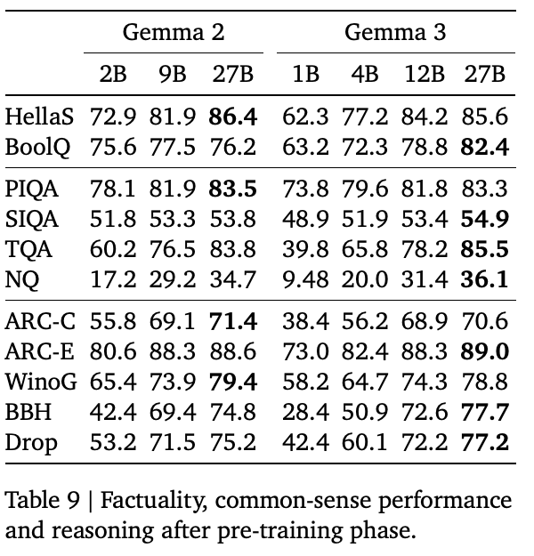
事实性与常识。表 9 报告了新预训练模型在基准上的表现，并与先前版本比较。我们考虑若干标准基准，即 HellaSwag（Zellers et al., 2019）、BoolQ（Clark et al., 2019）、PIQA（Bisk et al., 2019）、SIQA（Sap et al., 2019）、TriviaQA（Joshi et al., 2017）、Natural Questions（Kwiatkowski et al., 2019）、ARC-C 和 ARC-E（Chollet, 2019）、WinoGrande（Sakaguchi et al., 2019）、BBH（Suzgun et al., 2022）、DROP（Dua et al., 2019）。评估细节见表 19。总体而言，我们的模型与 Gemma 2 处于大致相同的水平，这令人鼓舞，因为这些能力并非本版本改进的重点。
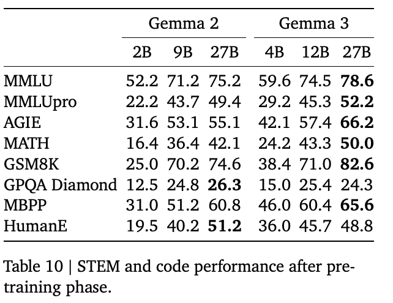
STEM 与编程。表 10 给出了模型在 STEM 和编程方面的详细表现。我们考虑若干标准基准，即 MMLU（Hendrycks et al., 2020）、MMLU-Pro（Wang et al., 2024）、AGIEval（Zhong et al., 2023）、MATH（Hendrycks et al., 2021）、GSM8K（Cobbe et al., 2021）、GPQA（Rein et al., 2023）、MBPP（Austin et al., 2021）、HumanEval（Chen et al., 2021）。评估细节见表 19。总体而言，我们的预训练模型在 STEM 能力上均有持续提升。在编程方面，4B 和 12B 模型也有类似提升，但 27B 没有。
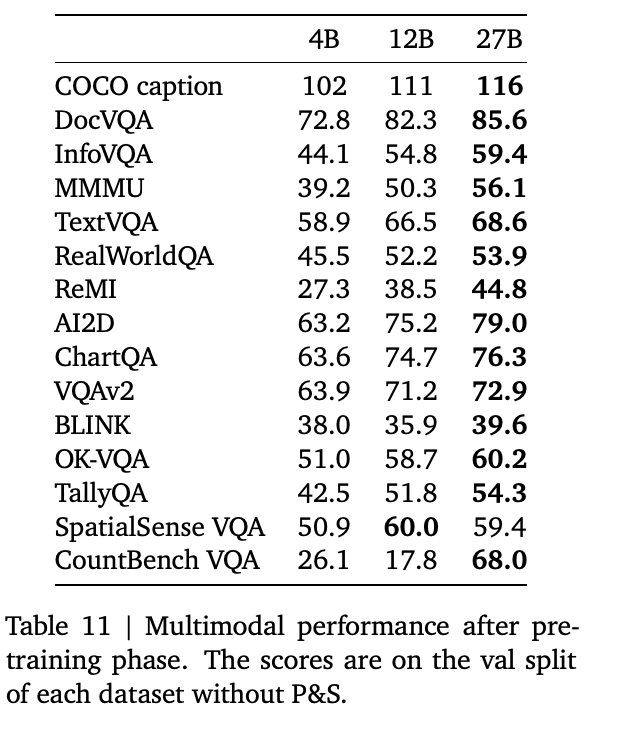
图像理解。表 11 报告了使用视觉编码器训练的各模型在多种视觉问答基准上的表现，即 COCO Caption（Chen et al., 2015）、DocVQA（Mathew et al., 2020）、InfographicVQA（Mathew et al., 2022）、MMMU（Yue et al., 2023）、TextVQA（Singh et al., 2019）、RealWorldQA（Rea）、ReMI（Kazemi et al., 2024a）、（接下一页）
（接上一页）
AI2D（Kembhavi et al., 2016）、ChartQA（Masry et al., 2022）、VQA v2（Goyal et al., 2017）、BLINK（Fu et al., 2024）、OK-VQA（Marino et al., 2019）、TallyQA（Acharya et al., 2018）、SpatialSense VQA（Yang et al., 2019）、CountBench VQA（Paiss et al., 2023）。评估细节见表 20。
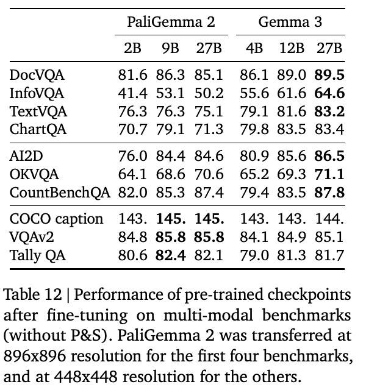
与 PaliGemma 2 比较。我们按 Steiner et al.（2024）的流程微调多模态 Gemma 3 预训练 checkpoint——仅扫描学习率，其他迁移设置保持相同。表 12 的结果表明，Gemma 3 在涉及文档理解的基准上表现出色，甚至超过了更大的 PaliGemma 2 变体。注意，由于视觉编码器中的平均池化，在相同的 896 × 896 分辨率下，Gemma 3 4B 和 12B 模型的迁移成本约为 PaliGemma 2 9B 和 27B 模型的十分之一。Gemma 3 在 AI2D 和 OKVQA 上也表现更好，但 PaliGemma 2 在 VQAv2 和 COCO Caption 上略好。
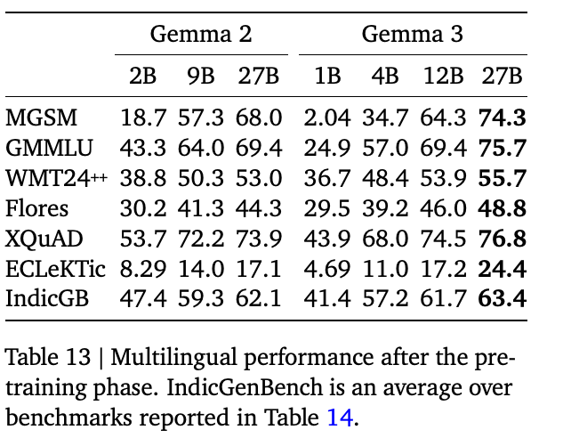
多语言能力。表 13 报告了预训练模型在多语言任务上的表现。我们通过多示例提示应用上下文学习，并给出以下基准的结果：MGSM（Shi et al., 2023）、Global-MMLU-Lite（Singh et al., 2024b）、WMT24++（Deutsch et al., 2025）、FLoRes（Goyal et al., 2022）、XQuAD（Artetxe et al., 2020）、ECLeKTic（Goldman et al., 2025）、IndicGenBench（Singh et al., 2024a）、XOR QA（Asai et al., 2020）。评估细节见表 19。
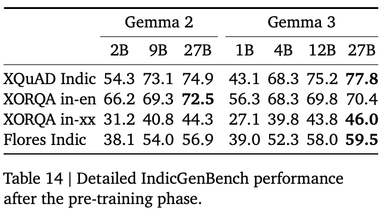
长上下文。表 15 报告了预训练和微调模型在长上下文基准上的表现。我们纳入 RULER（Hsieh et al., 2024）和 MRCR（Vodrahalli et al., 2024）基准，并在 32K 和 128K 序列长度下评估。
表 18 给出了 IT 模型的补充基准。注意，N2C 指 Natural2Code，即 Gemini 1.0 的内部留出数据集，它使用作者生成的来源，而不是基于网络的信息。BBEH 指 BIG-Bench Extra Hard（Kazemi et al., 2025），这是一个具有挑战性的 LLM 推理基准，汇集了多个推理任务（Fatemi et al., 2024; （接下一页）
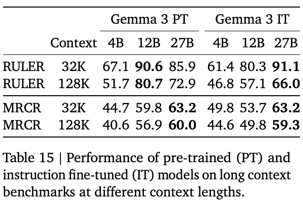
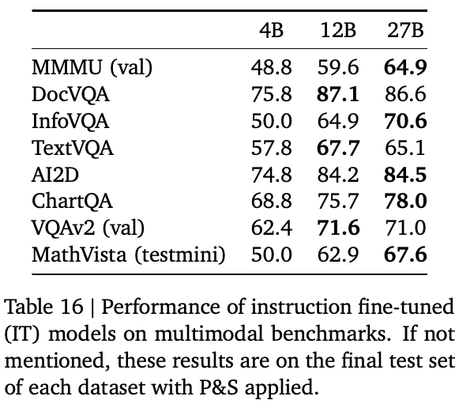
（接上一页）
Hessel et al., 2022; Kazemi et al., 2023, 2024b; Kıcıman et al., 2023; Nie et al., 2024; Sánchez et al., 2024; Shah et al., 2024; Tyen et al., 2023; White et al., 2024; Yamada et al., 2023; Zhang et al., 2024）。ECLeKTic 指 Goldman et al.（2025）。我们报告微平均分数。更多评估细节见表 21。
补充多模态评估。我们按照 Gemini 1.5（Gemini Team, 2024）的评估流程，在常见视觉基准上评估 Gemma 3 IT 模型。启用 P&S 时的结果见表 16。
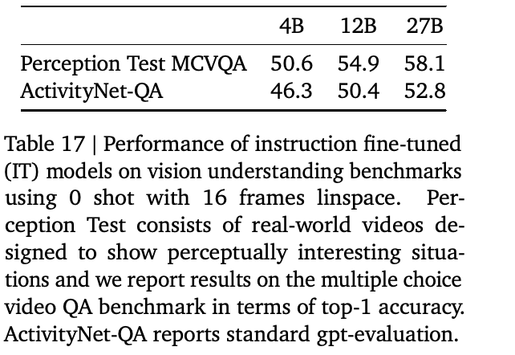
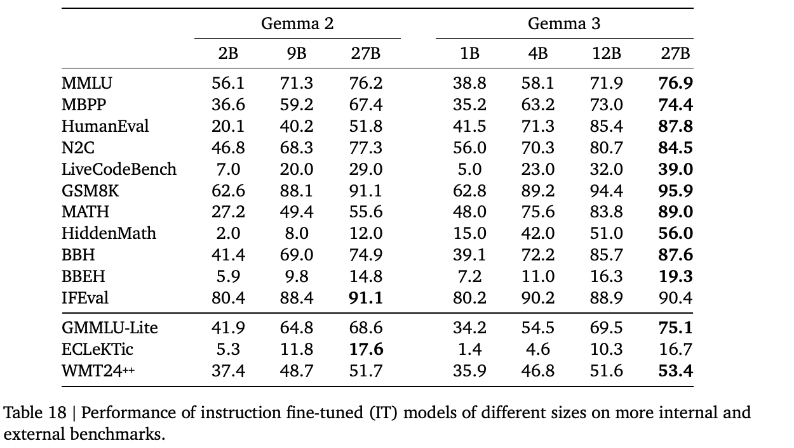
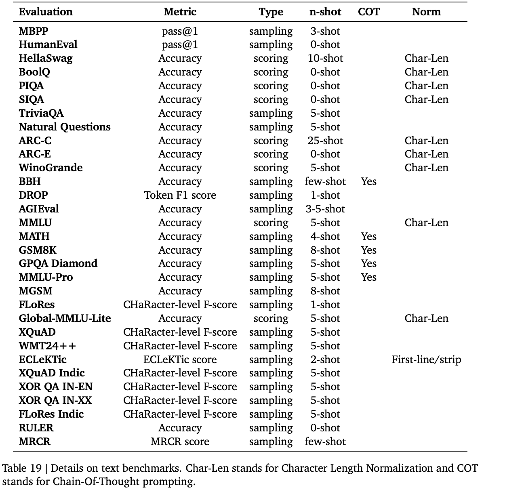
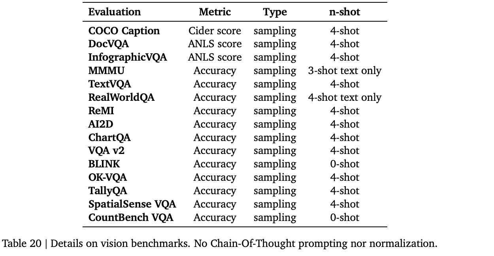
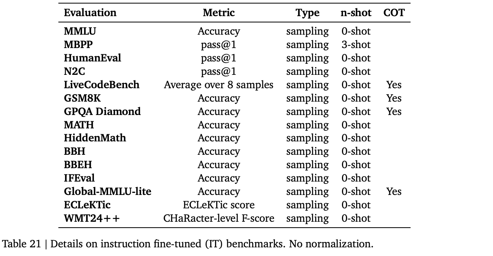